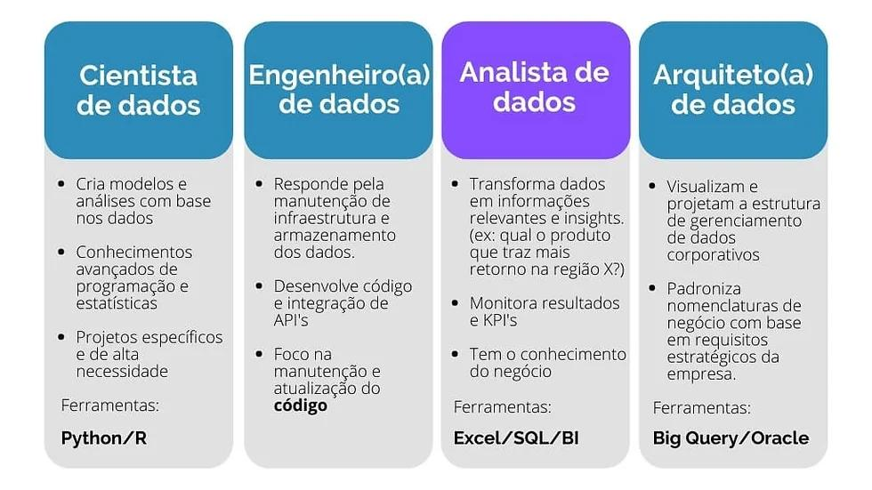

Carreiras em Dados
Engenheiro(a) de Dados
Responsável por construir e manter a infraestrutura de dados que sustenta as operações de Data Science. Isso inclui projetar, construir e gerenciar pipelines de dados, data lakes e data warehouses. Domina tecnologias de Big Data, como Hadoop, Spark e plataformas de cloud computing. Habilidades essenciais incluem proficiência em SQL, Python ou Scala, além de conhecimentos em bancos de dados NoSQL e modelagem de dados.
Analista de Dados
Extrai insights valiosos de dados para solucionar problemas de negócios e apoiar a tomada de decisões estratégicas. Utiliza técnicas de análise estatística, ferramentas de visualização e dashboards para identificar padrões, tendências e anomalias nos dados. Habilidades essenciais incluem proficiência em SQL, Excel, Power BI ou Tableau, além de conhecimentos em estatística descritiva e inferencial.
Cientista de Dados
Combina expertise em estatística, programação e conhecimento de domínio para analisar dados complexos e construir modelos preditivos. Utiliza técnicas de Machine Learning e Inteligência Artificial para solucionar problemas de negócios e descobrir novas oportunidades. Habilidades essenciais incluem proficiência em Python ou R, conhecimentos em Machine Learning (aprendizado supervisionado e não supervisionado), além de habilidades em visualização de dados e storytelling.
Especialista em Machine Learning
Desenvolve, treina e implementa algoritmos de Machine Learning para criar soluções inteligentes e automatizadas. Domina técnicas de aprendizado supervisionado e não supervisionado, além de frameworks como TensorFlow, PyTorch e Scikit-learn. Possui expertise em otimização de modelos, seleção de features e avaliação de performance.
Engenheiro(a) de Machine Learning
Conecta a Ciência de Dados com a Engenharia de Software, implementando e gerenciando modelos de Machine Learning em produção. Garante a escalabilidade, a performance e a confiabilidade das soluções de Machine Learning. Habilidades essenciais incluem proficiência em Python, Cloud Computing (AWS, Azure, GCP), DevOps e conhecimentos em APIs e integrações.
